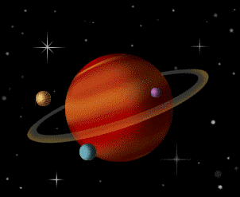

عن زحل
زحل هو الكوكب السادس في النظام الشمسي ويشتهر بحلقاته الرائعة.

معلومات
- الخصائص العامة :
- القطر: 116,460 كم
- المسافة إلى الشمس: 1.4 مليار كم
- مدة الدوران: 10.7 ساعة
- فترة الثورة: 29.4 سنة أرضية
- أَجواء :
- المكونات الرئيسية: الهيدروجين، الهيليوم
- متوسط درجة الحرارة
- خواتم :
- التكوين: الجليد، الصخور
- العرض: حوالي 280.000 كم
- الأقمار الصناعية الطبيعية:
- تيتان
- إنسيلادوس
- ميماس
- ...وأكثر من 80 آخرين